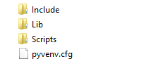
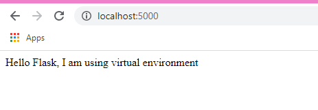

Java has 3rd-party libraries loaded and used throughout the whole system.
Unlike Java, Python loads 3rd-party modules on a project-by-project basis. And as you create more Python projects, you’ll inevitably end up using more 3rd-party modules.
By default, every Python project will use same directories to store and retrieve 3rd-party modules. There are different locations where they can be installed on your system. The problem of how and where Python 3rd party packages are stored becomes apparent when different projects require different versions of the same package.
Python virtual environment solves this exact problem - it allows to create an isolated environments for each project to deal with dependencies on earlier versions of packages and ensure that all of the installed dependencies won't affect the other projects on your computer.
Virtualization allows to run a development environment that mirrors the deployed setup as closely as possible. As you create more complex projects, using containers, the OS runtime can be packaged along with the code - a concept known as infrastructure as code (IaC). There exist Docker images for a variety of combinations of OS and Python versions for use on any system
First, to check the version of Python. Open the command prompt and type the command
Next, create a project directory & go inside it. At the command prompt type the command
Then create a virtual environment (called myapp) inside the project directory. That wil creat a separate, isolated instance of the Python runtime for your project, with its own complement of packages.
If you have Python 3, on the command prompt (for Windows) type the command
In Python 2 you can install virtualenv package using pip install virtualenv.
Note: If you have Python 3 < 3.6, pyvenv instead of venv was used for creating virtual environments. So, if not working, try: c:>c:\Python35\python -m venv c:\path\to\myenv. Read more @ https://docs.python.org/3/library/venv.html#module-venv
Running the command to create a virtual environment it will create the following directory tree structure inside your project directory and it will place a pyvenv.cfg file in it:
You can also check the project folder. You will see the sub-directory myapp inside it and the sub-directories of myapp that contain all of the Python executables, dependencies, and packages required to develop and run Python programs. It also includes some useful tools like pip and easy_install:
- bin (for Mac) aor Scripts(for Windows) - contains files that interact with the virtual environment - include - contains C headers that compile the Python packages -lib - contains a copy of the Python version along with a site-packages subdirectory (initially empty) where each dependency are installed Each virtual environment takes up about 25MB.If your environment is Jupiter notebook you can type the %%writefile C:\your_path_to_project\project\main.py
Explaining the code: First line is importing Flask module and creating a Flask web server from the Flask module. from flask import Flask
app=Flask(__name__) is creating an instance of the Flask class and calling it app. name means current file: main.py
@app.route('/') is a decorator and "/" refers to the default page
definition of hello() - returns when the user goes to the default page @app.route('/') def hello(): return "Hello Flask"
app.run() or pp.run(debug=True) will run the application. debug=True will return possible Python errors on the web page.
Chek the project directory to see if it contains main.py
Read the last line, "Running on http://127.0.0.1:5000/". This tells you that the IP of your web page: port = 5000 on your computer. You can replace 127.0.0.1 to localhost that is your computer. Go to your web browser and type http://localhost:5000/ to see the hello function returned as a webpage.
Python virtualenv "containerizes" only Python runtime (interpreter and libraries). With containers you can isolate an entire OS, and there are Docker images for almost every combination of OS and Python versions ready to pull and use on your computer with Docker installed.
A container is more like a virtual machine (VM) than a virtual environment. A container "containerizes" the OS runtime (file-system, user-space libraries and network interfaces) that can be packaged along with the code for a project, while a Virtual Machine is a virtualized hardware. That explains why containers are much smaller in size (MBs) than a VM (GBs).
Docker is one of the most popular virtualization platform available. "Docker is an open-source project that automates the deployment of software applications inside containers by providing an additional layer of abstraction and automation of OS-level virtualization on Linux."
Docker allows developers & system admins to easily deploy their software applications using a container i.e., a runnable instance of an image.
It is easy to create, start, stop, move, or delete a container using the Docker API or CLI
1. Check to make sure your docker machine is active (check the IP address): Type the commands
2. Tp create a local Python virtual environment and activate it. Type on a Mac terminal the command:
3. To create the Dockerfile type on the Terminal
4. Write the source code for each file requirements.text and app.py
5. To build your docker image: $ docker build -t myapp Name your Docker image (“myapp” ) # To check that your Docker image is created: $ docker image ls
6: Run the Docker image $ docker run -d -p 4000:80 myapp Runs the app.py in container Flags: -d detached mode - p maps your computer's port 4000 to the container’s exposed port 80 (defined in Dockerfile) To check the IP type $ docker-machine IP Type in your browser: https://IP:4000/
7. Setup Docker Hub Account and deploy it!
$ docker tag myapp username/myapp:ver1.0
# To check your repo image has been created; $ docker image ls
#To push your image to docker hub $ docker push username/myapp:ver1.1 Now anyone can pull and run the remote docker image from the remote repository : $ docker run -d -p 4000:80 username/myapp:ver1.1Docker Registry is an application that manages storing and delivering Docker containers. You can build containerized applications on cloud platforms like AWS Cloud9, Google Cloud, etc.
Building web applications that use machine learning and ai algorithms to automate tasks can drive innovation.
As machine learning and ai model building is getting easier than ever, there is a great amount of utility to be able to publish machine learning and ai models on a webserver for free or at a low cost. Another option is building your private Docker Registry on a Linux Server.